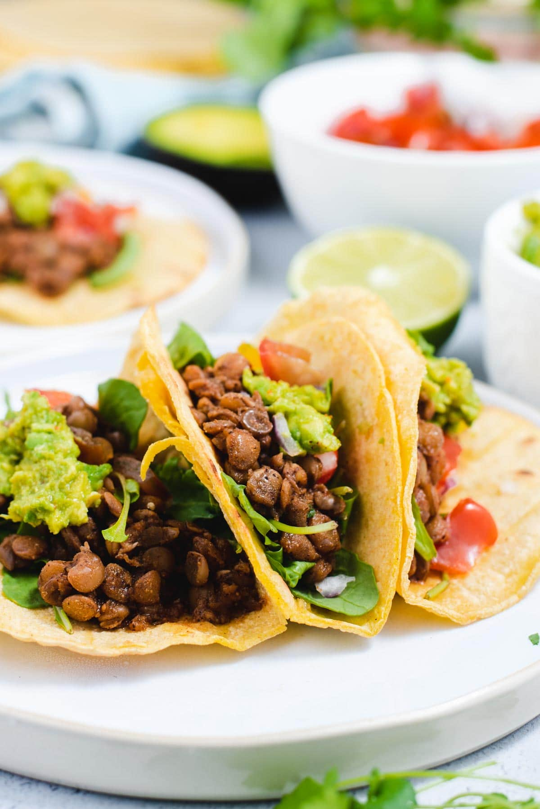

Soft Tacos
Home

Description
The spicy lentils pair amazingly well with the softness of the tortilla,
and the tang of the lime. A must for spice lovers.
Ingredients
- Tortillas - 6
- Cooked lentils - 2 cans
- Avocado - 2
- Lettuce - 1/4 of a head
- Brown onion - 1
- Olive oil - 1 tablespoon
- Water - 200mL
- Taco spice - 1 packet (I prefer Old el Paso)
- Guacamole spice - 1 packet (again, Old el Paso)
- Chilli sauce, eg sriracha - To your liking
- Shredded cheese - To your liking
Steps
- Open and drain the lentils, and blend in a food processor.
- Dice up the onion.
- In a frypan, heat up the frypan over low heat. Once hot, add the onion.
- Cook the onion until soft and translucent.
- Add the lentils to the pan, along with the lentils, water and taco spice.
- Leave the water to evaporate, and shred the lettuce.
- Warm up the tortillas in a low heat (80 deg C) until soft.
- Scoop out the avocado flesh into a bowl, and mix in the guacamole spice.
- Lay the tortilla on a plate, add cheese, lentils, sauce, lettuce, and guacamole.